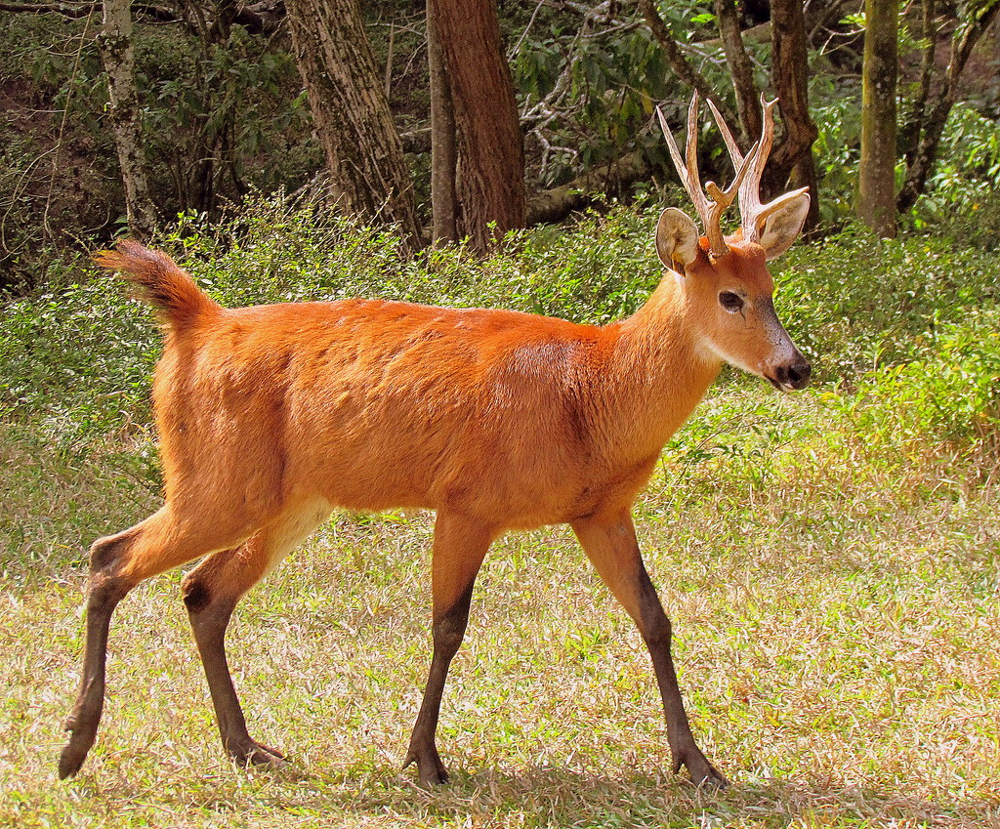
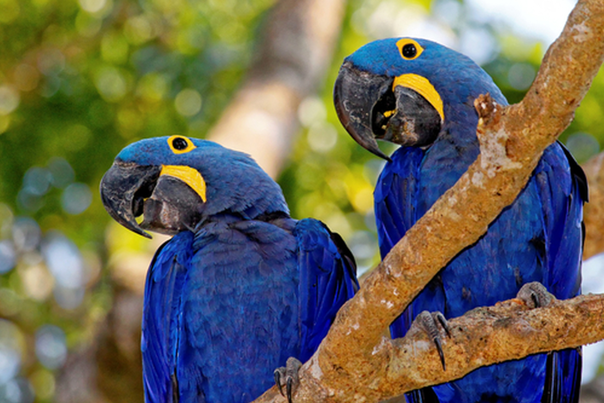
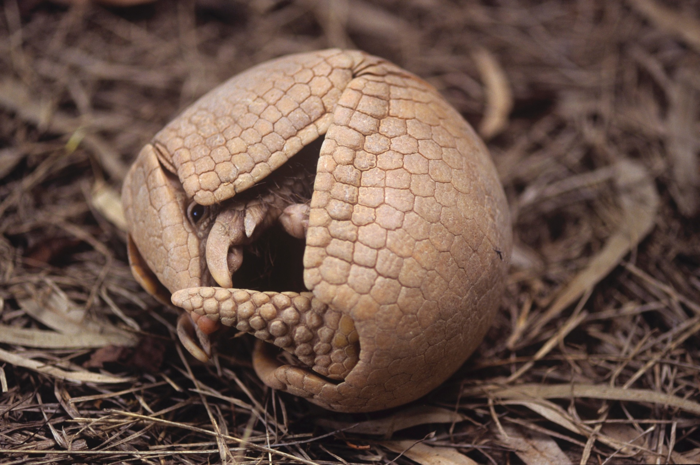
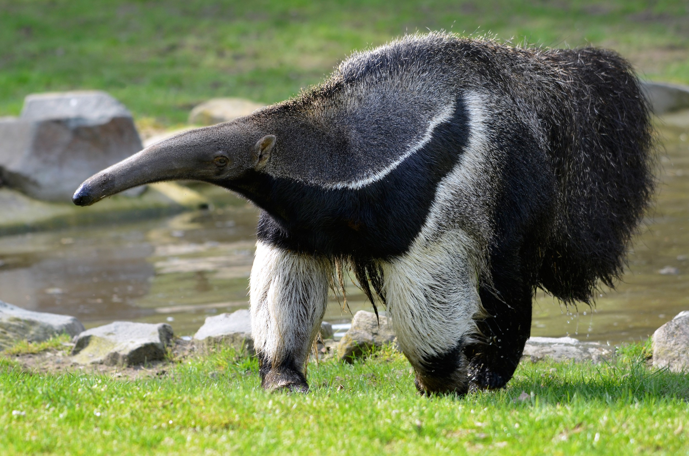

Introdução
O Brasil abriga uma das maiores diversidades biológicas do planeta, sendo lar de inúmeras espécies que desempenham funções ecológicas essenciais. No entanto, o avanço das atividades humanas vem comprometendo a sobrevivência de muitos desses animais. Entre os mais afetados estão a onça-pintada, o cervo-do-pantanal, a arara-azul-de-lear, o tatu-bola e o tamanduá-bandeira, todos incluídos em listas oficiais de espécies ameaçadas de extinção elaboradas pelo Instituto Chico Mendes de Conservação da Biodiversidade (ICMBio) e reconhecidas pelo Instituto Brasileiro do Meio Ambiente e dos Recursos Naturais Renováveis (IBAMA). As causas da extinção desses animais se da por inúmeros fatores, sendo principais:
1. Desmatamento
O desmatamento causa impactos profundos e devastadores na fauna brasileira. Ao destruir florestas e outros ecossistemas, milhares de animais perdem seus habitats naturais, ficando sem abrigo, alimento e áreas de reprodução. Espécies como onças, tamanduás, primatas, aves e insetos tornam-se mais vulneráveis à fome, à caça e a conflitos com humanos. Muitas populações acabam isoladas em pequenos fragmentos de mata, reduzindo a diversidade genética e aumentando o risco de extinção. Além disso, o desaparecimento da vegetação rompe cadeias alimentares inteiras, afetando desde predadores de topo até pequenos organismos essenciais para o equilíbrio ecológico. O desmatamento não apenas elimina árvores, mas ameaça profundamente a sobrevivência da fauna, comprometendo a biodiversidade e o equilíbrio dos biomas brasileiros.
Onça-pintada
(Panthera onca)
A onça-pintada (Panthera onca) é o maior felino das Américas e ocupa ecossistemas variados, como a Amazônia, o Cerrado e o Pantanal. Sua presença é um indicador da saúde ambiental, pois atua no controle de populações de presas, mantendo o equilíbrio dos ecossistemas. Contudo, segundo o ICMBio (2022), a espécie enfrenta sérias ameaças devido ao desmatamento, à fragmentação de habitats e aos conflitos com criadores de gado, que frequentemente promovem a caça retaliatória. No Paraná, o Instituto Água e Terra (IAT) aponta que a perda de habitat causada pelo avanço da agropecuária é uma das principais razões para a redução das populações no estado.

Cervo-do-Pantanal (Blastocerus dichotomus)
O cervo-do-pantanal (Blastocerus dichotomus) é o maior cervídeo da América do Sul e habita áreas alagadas, várzeas e campos inundáveis, especialmente no Pantanal e em partes do Cerrado. A espécie desempenha papel ecológico importante ao consumir a vegetação aquática e servir de presa para grandes predadores, contribuindo para o equilíbrio dos ecossistemas. Entretanto, segundo o ICMBio (2022), o cervo-do-pantanal encontra-se ameaçado principalmente pela drenagem de áreas úmidas, queimadas e expansão agropecuária, que reduzem drasticamente seu habitat natural. No Paraná, dados do Instituto Água e Terra (IAT) indicam que a fragmentação e a perda de ambientes alagados são fatores centrais para o declínio das populações locais.

Arara-Azul-de-Lear (Anodorhynchus leari)
A arara-azul-de-lear (Anodorhynchus leari), endêmica da Caatinga baiana, é uma ave que habita paredões rochosos e depende do licuri (Syagrus coronata) como principal fonte alimentar. Segundo o ICMBio (Plano de Ação Nacional para a Conservação da Arara-azul-de-lear, 2020), o tráfico de animais silvestres e a retirada de filhotes da natureza foram as principais causas do declínio da espécie. Atualmente, esforços de reintrodução e monitoramento, coordenados pelo ICMBio em parceria com o Instituto Arara Azul e o IBAMA, têm contribuído para o aumento controlado das populações.

Tatu-bola
(Tolypeutes tricinctus)
O tatu-bola (Tolypeutes tricinctus), típico do Cerrado e da Caatinga, é uma das espécies mais emblemáticas da fauna brasileira, conhecido por sua capacidade única de enrolar-se completamente em forma de bola para se proteger. De acordo com o ICMBio (2018), o desmatamento para expansão agrícola e a caça são as principais ameaças à espécie. O IBAMA reforça que o desmatamento da Caatinga, bioma onde o tatu-bola é endêmico, representa uma perda crítica de habitat, colocando em risco também outras espécies associadas a esse ecossistema.

Tamanduá-bandeira (Myrmecophaga tridactyla)
Já o tamanduá-bandeira (Myrmecophaga tridactyla), que habita campos, cerrados e bordas de florestas, tem sido impactado pela perda de vegetação nativa e pela expansão de áreas agrícolas. Segundo o ICMBio (2022), os atropelamentos em rodovias e as queimadas intensas durante o período seco são fatores significativos para o declínio populacional da espécie. No estado do Paraná, o IAT monitora ocorrências de atropelamentos e a fragmentação de habitats, buscando criar corredores ecológicos que auxiliem na conservação desse mamífero.

Ameaças Gerais a nosssa fauna
- 1. Caça, perseguição e retaliação: muitas vezes animais que atacam o gado são mortos (onça), ou são caçados para comércio (araras, tatus), ou para alimento (alguns tatus).
- 2. Tráfico e comércio ilegal de fauna: araras azuis e outros psitacídeos são alvo de tráfico, o que reduz populações selvagens e quebra cadeias de reprodução.
- 3. Perda de conectividade e isolamento de populações: quando os animais ficam em “ilhas” de habitat cercadas por ambientes humanos, a viabilidade genética muitas vezes se reduz (menor variabilidade, menor capacidade de adaptação).
- 4. Mudanças climáticas, eventos extremos, incêndios: mesmo espécies em áreas “protegidas” podem sofrer com incêndios, secas intensas, alterações dos regimes de inundação. Por exemplo, no Pantanal.
- 5. Destruição, fragmentação ou alteração do habitat: seja por desmatamento, usinas hidrelétricas, estradas, expansão agrícola, mineração, construção de barragens. Exemplos: onça-pintada (habitat), cervo-do-Pantanal (várzeas inundadas).
- 6. Espécies-chave que desaparecem = efeito cascata ecológico: quando predadores ou dispersores importantes desaparecem, há impacto em cascata nos demais componentes do ecossistema.
Impactos ambientais e o que isso significa para o Brasil
O Brasil declarou milhares de espécies de fauna sob algum grau de ameaça: por exemplo, mais de 1.182 espécies animais ameaçadas segundo dados de 2018. Quando espécies como as citadas acima começam a desaparecer ou se tornar raras, o que era “normal” em determinada paisagem deixa de existir, e com isso, a paisagem muda. Imagine: a onça-pintada some; quem restou como regulador de herbívoros? Esses herbívoros aumentam; eles comem mais vegetação; vegetação se reduz; solo se degrada; outros animais perdem habitat; etc. Além disso, há um forte componente cultural, econômico e de identidade nacional: o Brasil se orgulha de sua fauna, do ecoturismo, das paisagens exuberantes, perder espécies emblemáticas é perder parte da “marca Brasil” ambiental.
O que podemos fazer?
Com base nos planos de ação nacionais (PANs) e nas avaliações do ICMBio, podemos listar algumas linhas de ação prioritárias:
- Garantir Áreas Protegidas de qualidade e conectividade entre elas (corredores ecológicos) para espécies com grandes exigências espaciais (ex: onça-pintada).
- Fortalecer fiscalização e combate ao tráfico e à caça ilegal (ex: araras, tatus), e fazer campanhas de educação ambiental.
- Promover convivência entre humanos e fauna: por exemplo, no caso de onças, trabalhar com pecuaristas para reduzir atacas de gado, uso de cercas elétricas, manejo adequado.
- Recuperar e conservar habitats específicos vulneráveis: várzeas, caatinga, cerrados, matas de galeria, palmeirais etc.
- Monitorar populações, fazer pesquisa científica, coletar dados genéticos, entender dinâmica populacional, etc (como previsto para o tatu-bola no PAN).
- Mobilizar sociedade civil, comunidades tradicionais e povos indígenas para participação ativa nos processos de conservação.
- Integrar políticas públicas ambientais com planejamento territorial, licenciamento de empreendimentos, estratégias de compensação ambiental.
- Valorizar espécies-chave como “espécies bandeira” para mobilização social e geração de recursos para conservação (por exemplo, a onça-pintada ou a arara-azul podem atrair atenção, financiamento, turismo).
O que podemos concluir com isso?
O Brasil vive uma criese crise silenciosa, porque nem sempre aparece nas manchetes, mas é profunda. E não é “apenas” sobre animais bonitos ou raros; é sobre ecossistemas inteiros, serviços ambientais, futuro do país. Se a onça-pintada desaparecer ou se tornar raríssima, se as araras-azuis não tiverem habitat adequado ou se os tatus-bolas desaparecem, o Brasil perde não só uma espécie, perde função ecológica, perde parte de sua riqueza natural. Mas há esperança: os órgãos governamentais (como o ICMBio e o Ibama) têm planos de ação, há ONGs, há mobilização internacional. O problema é que as ações precisam ser intensificadas. E a sociedade como um todo, cidadãos comuns, empresários, fazendeiros, governos estaduais e municipais, têm papel a desempenhar.